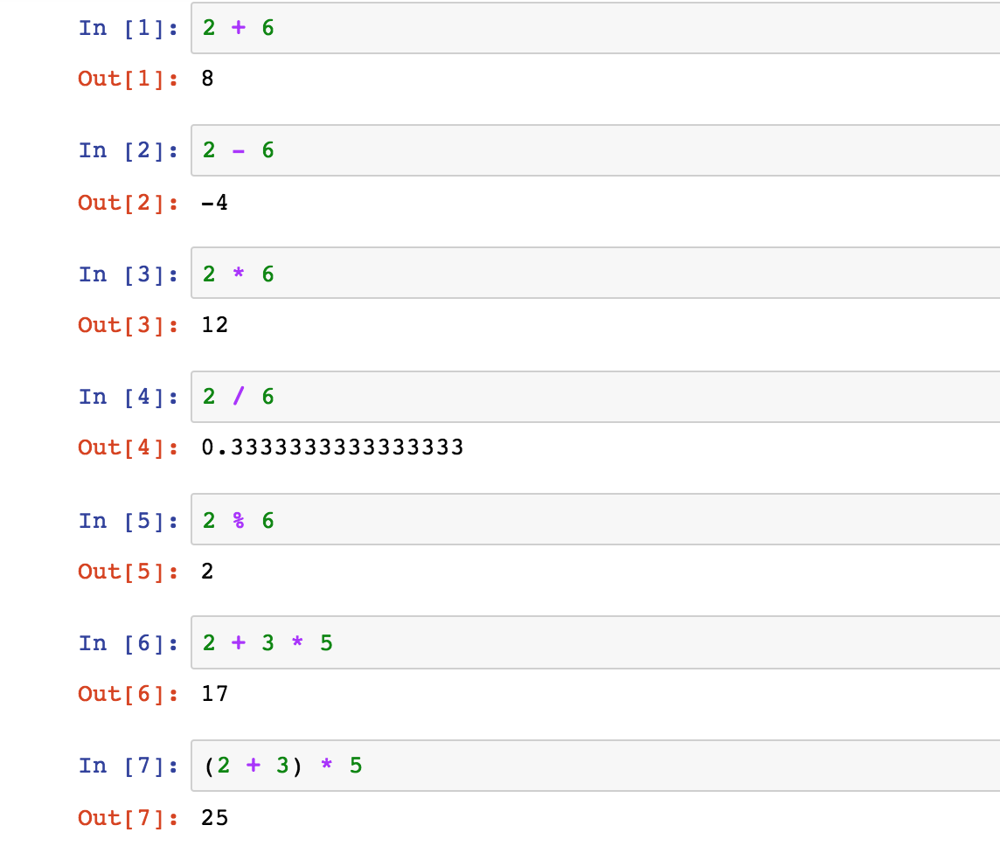

Python is a general purpose1 , interpreted, high level programming language. Some of the important features of Python are as below:
Python is used mainly in below mentioned fields:
Lets start Python with traditional hello world program. In order to write Python program, you must have Python installed on your computer. If you are using Mac then Python would already be installed on your machine. To confirm, run python -V (note V is in uppercase) command on your terminal. If Python is installed then it will return the version of Python installed on your machine. If you are using Windows machine, download Python here and install on your machine. If you do not want to install Python on your machine and practice online Jupyter is the best website.
Let's start writing our very first program. Type python on command line to start python shell. For printing anything to console use inbuilt function print. Type print("Hello world") and you are done. Here is the code written in Jupyter.

Python code can be run mainly using below ways:
Python is an object oriented, dynamically typed language. You do not need to declare the variable before using them. Here are some of the basic types supported by Python.
Numbers are supported by most of the programming languages. Python supports integers and float data types. Here are some of the common operations that can be performed using numbers.
String is sequence of characters. You can use single and double quotes to enclose any string. Using both types of quote allow us to use quotes within the string itself. we can also use escape character to allow quotes. Since String is sequence of characters, we can access any character by variable_name[position] notation. Use negative number if you want to start from back.
Boolean variable are mainly used for evaluating conditions and has only 2 constant values.